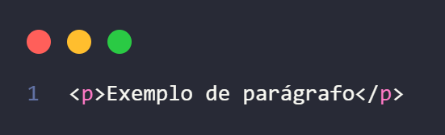
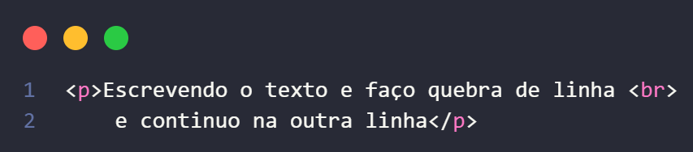

HTML
CSS
Exemplo
BabyDev Docs
“Aprenda HTML e CSS de forma simples e visual”
📌 Tags de Texto no HTML
🔹 <h1> até <h6>
O que são: São os tÁtulos/headers do HTML.
Diferença: <h1> é o mais importante e grande; <h6> é o menor e menos importante.
Uso correto: Deve existir apenas um <h1> por página (para o tÁtulo principal).
💻 Exemplo de código
🖥️ Resultado no navegador
🔹 <p>
O que é: Define um parágrafo de texto.
CaracterÁsticas: Cria espaçamento automático antes e depois do texto.
💻 Exemplo de código

🖥️ Resultado no navegador
🔹 <br>
O que é: Quebra de linha.
Observação: É uma tag vazia (não precisa de fechamento).
Exemplo de uso: Dentro de um texto para pular linha sem iniciar novo parágrafo.
💻 Exemplo de código

🖥️ Resultado no navegador
🔹 <hr>
O que é: Linha horizontal que divide seções de conteúdo.
Exemplo de uso: Separar capÁtulos, tópicos ou áreas do site.
💻 Exemplo de código
🖥️ Resultado no navegador
🔹 <strong>
O que é: Dá ênfase forte ao texto (aparece em negrito).
Diferença para <b>: <strong> tem significado semântico, o navegador e leitores de tela entendem que aquele texto é importante.
💻 Exemplo de código
🖥️ Resultado no navegador
🔹 <em>
O que é: Dá ênfase ao texto (aparece em itálico).
Diferença para <i>: <em> tem valor semântico de destaque, não só de estilo.
💻 Exemplo de código
🖥️ Resultado no navegador
🔹 <mark>
O que é: Marca o texto como se fosse um marca-texto (fundo amarelo por padrão).
💻 Exemplo de código
🖥️ Resultado no navegador
🔹 <small>
O que é: Texto em tamanho menor (nota de rodapé, observação).
💻 Exemplo de código
🖥️ Resultado no navegador
🔹 <del>
O que é: Mostra um texto que foi removido (aparece riscado).
💻 Exemplo de código
🖥️ Resultado no navegador
🔹 <ins>
O que é: Mostra um texto que foi inserido (geralmente aparece sublinhado).
💻 Exemplo de código
🖥️ Resultado no navegador
🔹 <sup>
O que é: Texto em sobrescrito (em cima da linha, usado em potências ou notas).
💻 Exemplo de código
🖥️ Resultado no navegador
🔹 <sub>
O que é: Texto em subescrito (abaixo da linha, usado em fórmulas quÁmicas ou notas).
💻 Exemplo de código
🖥️ Resultado no navegador
🔹 <b> e <i>
O que são:
<b> → deixa em negrito, mas sem significado semântico.
<i> → deixa em itálico, mas sem significado semântico.
Uso atual: são considerados tags de estilo, não recomendados para dar ênfase. Prefira <strong> e <em>.
💻 Exemplo de código
🖥️ Resultado no navegador
🔹 <u>
O que é: Sublinha o texto.
Uso atual: Antes era só estilização visual; hoje é melhor usar CSS (text-decoration: underline) por semântica, mas ainda funciona.
💻 Exemplo de código
🖥️ Resultado no navegador
🔹 <s>
O que é: Risca o texto (strike-through).
Uso atual: Mostra algo que foi descontinuado ou incorreto, diferente do <del> que indica algo removido com significado semântico.
💻 Exemplo de código
🖥️ Resultado no navegador
📌 Estruturais básicas
🔹 html, head e body
<html> → Raiz do documento HTML, tudo fica dentro dela.
<head> → Contém metadados (informações do documento: tÁtulo, links, charset, scripts).
<body> → Parte visÁvel da página (conteúdo que aparece para o usuário).
💻 Exemplo de código
📌 Semânticas para estrutura
🔹 header, nav, main, section, article, aside e footer
<header> → Cabeçalho da página ou seção (geralmente tÁtulo, logo, menu de navegação).
<nav> → Área de navegação (links de menus).
<main> → Conteúdo principal da página (apenas um <main> por página).
<section> → Seção de conteúdo com tema em comum (ex: "Sobre", "Projetos").
<article> → Conteúdo independente e completo (ex: post de blog, notÁcia, card).
<aside> → Conteúdo lateral, como barras de informações, anúncios ou links extras.
<footer> → Rodapé da página ou seção (ex: direitos autorais, contatos, links sociais).
💻 Exemplo de código
🖥️ Demonstração de como usar no navegador
📌 Tags Estruturais Genéricas
🔹 <div>
O que é: Uma divisão genérica em bloco usada para agrupar outros elementos.
Quando usar:
Para organizar layout quando não existe uma tag semântica que se encaixe.
Muito usada junto com CSS para aplicar estilos ou criar estruturas de layout.
💻 Exemplo de código
🔹 <span>
O que é: Uma tag genérica usada para marcar um trecho de texto sem significado semântico.
Quando usar: Para aplicar estilo ou classe em parte de um texto.
💻 Exemplo de código
🖥️ Resultado no navegador
📌 Elementos de MÁdia e Interação
🔹 <button>
O que é: Cria um botão clicável.
Como usar: Usado para ações como enviar formulários ou interagir com scripts.
💻 Exemplo de código
🖥️ Resultado no navegador
🔹 <a>
O que é: Cria um link para outra página, seção ou arquivo.
Como usar: Defina o endereço no atributo href.
💻 Exemplo de código
🖥️ Resultado no navegador
🔹 <img>
O que é: Insere uma imagem na página.
Como usar: Use src para indicar o caminho da imagem e alt para descrever o conteúdo (importante para acessibilidade).
💻 Exemplo de código
🖥️ Resultado no navegador
🔹 <video>
O que é: Reproduz vÁdeos diretamente na página.
Como usar: Use src ou <source> dentro dele. Adicione controls para exibir botões de play/pause.
💻 Exemplo de código
🖥️ Resultado no navegador
🔹 <audio>
O que é: Reproduz áudio no navegador.
Como usar: Funciona parecido com <video>. Use controls para permitir que o usuário controle a reprodução.
💻 Exemplo de código
🖥️ Resultado no navegador
🔹 <iframe>
O que é: Exibe outro site ou conteúdo dentro da página.
Como usar: Muito usado para incorporar vÁdeos do YouTube, mapas do Google, etc. Defina a URL no src.
💻 Exemplo de código
🖥️ Resultado no navegador
🔹 <ul> <ol> <li>
<ul> → lista não ordenada (com pontos).
<ol> → lista ordenada (numerada).
<li> → cada item da lista.
Como usar: Coloque os itens<li> dentro de <ul> ou <ol>.
💻 Exemplo de código
🖥️ Resultado no navegador
🔹 Comentário — <!-- ... -->
O que é: Anotação no código que não aparece no navegador.
Como usar: Escreva o texto dentro de <!-- Comentário -->. Serve para lembrar algo ou desativar partes do código sem apagar.
💻 Exemplo de código
📌 Atributos HTML
🔹 href
O que é: Atributo que define o destino de um link.
Quando usar: Para criar links (hiperligações) que direcionam o utilizador para um novo destino, seja uma página web externa, um ficheiro, ou uma secção especÁfica da mesma página.
💻 Exemplo de código
🔹 src
O que é: Define a origem de um arquivo que será exibido (imagem, vÁdeo, áudio, iframe).
Quando usar: Para especificar a localização de um recurso externo que será incorporado diretamente na página,
💻 Exemplo de código
📌 Atributos Comuns
🔹 alt
O que é: Texto alternativo para imagens.
Quando usar: Sempre em <img> para descrever a imagem caso não carregue ou para leitores de tela (acessibilidade).
💻 Exemplo de código
🔹 title
O que é: Texto exibido como dica (tooltip) ao passar o mouse sobre o elemento.
Quando usar: Para dar informações extras ao usuário sobre links, botões ou imagens.
💻 Exemplo de código
🖥️ Resultado no navegador
🔹 id
O que é: Identificador único de um elemento na página.
Quando usar: Para aplicar estilos especÁficos no CSS ou manipular o elemento com JavaScript.
💻 Exemplo de código
🔹 class
O que é: Atribui uma ou mais classes a um elemento.
Quando usar: Para aplicar o mesmo estilo a vários elementos no CSS ou identificar grupos de elementos no JavaScript.
💻 Exemplo de código
🔹 style
O que é: Permite inserir CSS diretamente dentro da tag HTML (inline).
Quando usar: Para aplicar um estilo pontual a um elemento especÁfico (não recomendado para projetos grandes).
💻 Exemplo de código
🖥️ Resultado no navegador
🔹 target
O que é: Atributo usado no <a> para definir onde abrir o link.
Quando usar: Quando quiser, por exemplo, abrir um link em nova aba usando target="_blank".
💻 Exemplo de código
🖥️ Resultado no navegador
🔹 type
O que é: Define o tipo do elemento (muito usado em <input> ou <button>).
Quando usar: Para especificar o tipo de dado esperado, como type="text", type="email", type="password", ou o tipo do botão (submit, reset, button).
💻 Exemplo de código
🖥️ Resultado no navegador
🔹 controls
O que é: Mostra os controles padrão (play, pause, volume) em <audio> ou <video>.
Quando usar: Sempre que quiser que o usuário controle a mÁdia.
💻 Exemplo de código
🖥️ Resultado no navegador
📌 Formulários e Campos de Entrada
🔹 <form>
O que é: Container para campos de entrada e botões que enviam dados.
Quando usar: Sempre que precisar criar formulários para envio de informações (login, cadastro, pesquisa).
💻 Exemplo de código
🖥️ Resultado no navegador
🔹 <input>
O que é: Campo de entrada de dados (texto, senha, email, checkbox, radio etc.).
Quando usar: Para coletar informações do usuário. Define o tipo com type="text", type="email", type="password", etc.
💻 Exemplo de código
🖥️ Resultado no navegador
🔹 <label>
O que é: Etiqueta/legenda para um campo de formulário.
Quando usar: Para identificar claramente um <input>.
💻 Exemplo de código
🖥️ Resultado no navegador
🔹 <textarea>
O que é: Campo para entrada de texto longo (múltiplas linhas).
Quando usar: Quando precisar que o usuário escreva mensagens ou comentários grandes.
💻 Exemplo de código
🖥️ Resultado no navegador
🔹 <select> e <option>
O que é: Lista suspensa. <select> contém as opções; <option> define cada opção.
Quando usar: Para oferecer várias opções em um menu suspenso.
💻 Exemplo de código
🖥️ Resultado no navegador
🔹 <fieldset> e <legend>
O que é: <fieldset>agrupa campos relacionados; <legend> dá um tÁtulo a esse grupo.
Quando usar: Para organizar melhor formulários grandes.
💻 Exemplo de código
🖥️ Resultado no navegador
📌 Outras Tags Relacionadas
🔹 <link>
O que é: Liga recursos externos ao documento (CSS, Ácones, etc.).
Quando usar: No <head> para importar estilos CSS ou definir Ácone de aba do site.
💻 Exemplo de código
🔹 <meta>
O que é: Metadados sobre o documento (charset, descrição, autor, responsividade).
Quando usar: Sempre no <head> para configurar o comportamento da página.
💻 Exemplo de código
🔹 <script>
O que é: Adiciona ou importa código JavaScript.
Quando usar: Para inserir funcionalidades dinâmicas na página.
💻 Exemplo de código
🔹 <source>
O que é: Define fontes alternativas para <video> ou <audio>.
Quando usar: Para oferecer múltiplos formatos de mÁdia para compatibilidade entre navegadores.
💻 Exemplo de código